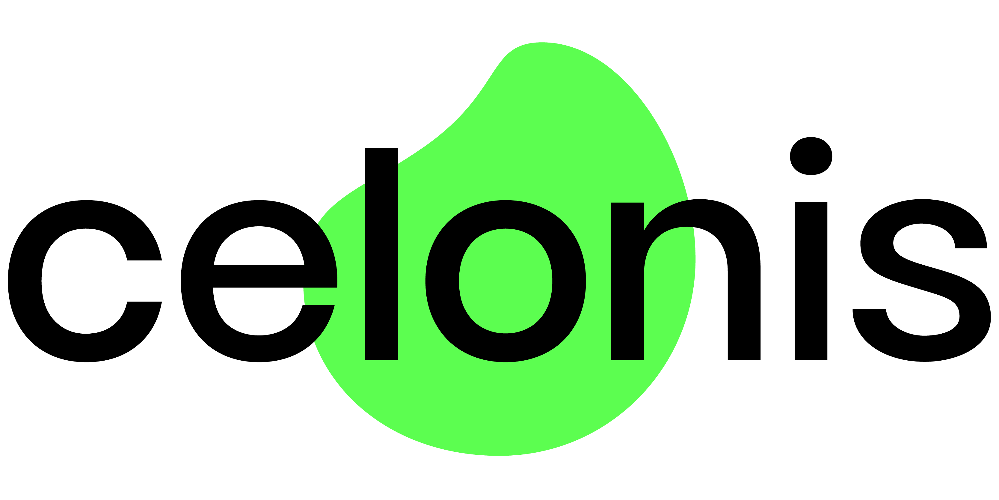
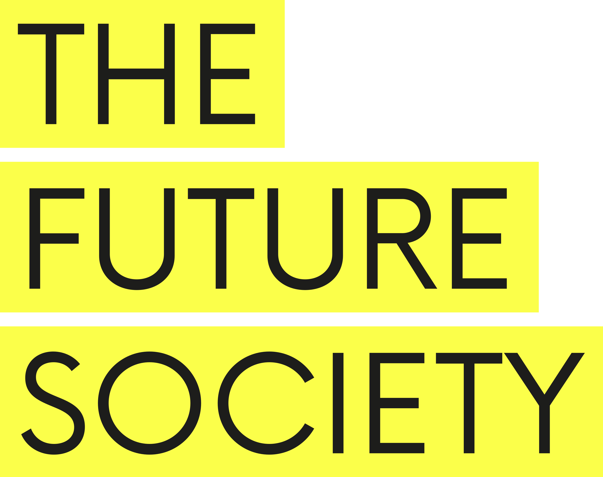
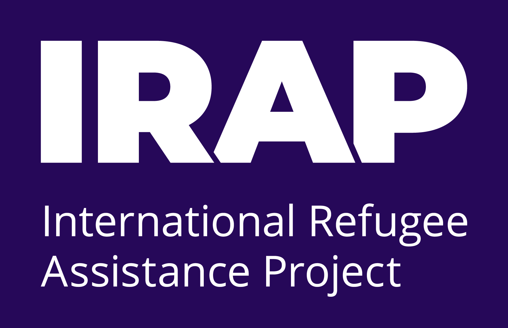
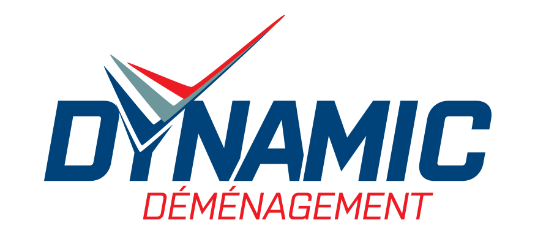

Organisations We've Worked With




· BRUSSELS · INTERNATIONAL ·
We are a two-person consultancy combining data analytics, business strategy, operations design, and AI governance — grounded in real-world experience across regulated industries, international organisations, and growth-stage companies.
We have both worked inside organisations — from regulated SaaS environments and EU institutions to international NGOs and frontier AI governance bodies — and seen the same problem repeat: companies sit on valuable data, but lack the infrastructure, process, or clarity to act on it.
MetricWave was built to close that gap. Not with generic dashboards or one-size-fits-all frameworks, but with hands-on, tailored work that connects your data to decisions that actually move the needle.
Based in Brussels with clients across Europe and North America, we work across sectors where precision matters and margin for error is low.
Complementary expertise. One shared standard.
Brussels, Belgium · Notre Dame Alumni
A Business Analyst and Data professional with a Master of Science in Business Analytics from the University of Notre Dame. Career spans a regulated SaaS environment at Flutter International — promoted four times, from IT Support to Business Analyst — followed by Analytics Consulting at Celonis, where process analysis surfaced $32M in operational inefficiencies. Experienced across requirements gathering, data quality frameworks, KPI design, API integrations, and cross-functional delivery in tech, logistics, mobility, and nonprofit sectors.
Tools & Methods
Brussels, Belgium · Notre Dame Alumni
An Operations Analyst and CAPM-certified project manager with 4+ years spanning international development, digital policy, and AI governance. Currently supporting operational infrastructure at The Future Society, a leading AI governance think tank. Former Program Manager at the International Refugee Assistance Project, where she led systems optimization and organisational AI adoption. Contributed to a €3.3M EU cybersecurity capacity project at the Council of Europe, and produced policy research on AI in the Global South and digital rights across 15+ countries — published and disseminated to 3,000+ municipalities.
Tools & Methods
University of Notre Dame · Notre Dame, USA
American University in Bulgaria · Blagoevgrad
Google · 2025 · PMP Candidate 2026
PMI · International Project Management
The Future Society · Notre Dame · USAID
Celonis EMS · Flutter International · Agile / ITIL
Real experience across industries where accuracy, compliance, and clarity are non-negotiable.
Product delivery, release management, and data operations across 15+ applications in a compliance-heavy environment (Flutter International / Singular).
Research and operational support at The Future Society, covering AI implications across human rights, digital transformation, and governance frameworks.
EU cybersecurity capacity projects (€3.3M, Council of Europe), refugee rights programs (IRAP), and multilateral coordination across 45+ high-level engagements.
Data quality and Salesforce frameworks for American NGOs, AI platform evaluation and organizational policy development for mission-driven organisations.
Competitive benchmarking and market gap analysis for logistics startups; functional requirements and system design for Georgian mobility platforms.
City innovation research across 15+ countries; policy guidebook for 3,000+ municipalities (National League of Cities); EU directive analysis (Moldova MFA).




Principles that show up in every engagement.
We do not produce outputs for the sake of outputs. Every deliverable — a dashboard, a process map, a policy recommendation — has a clear purpose and a defined decision it supports.
We are not generalists selling frameworks we read about. Both of us have built systems, managed stakeholders, and delivered under real constraints — in regulated, international, and resource-limited environments.
Data analytics and operations governance are not separate disciplines — they reinforce each other. Our combined lens means we spot problems and opportunities that single-track consultants miss.
We build systems that your team can own and iterate on. When our engagement ends, you should understand more about your data and processes than when we started — not less.
Whether you need sharper analytics, better operations, or both — let's talk.
Get In Touch